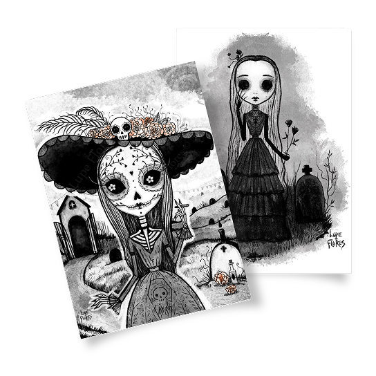
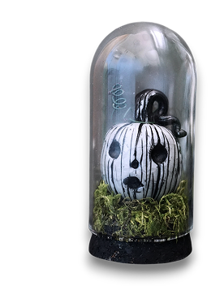
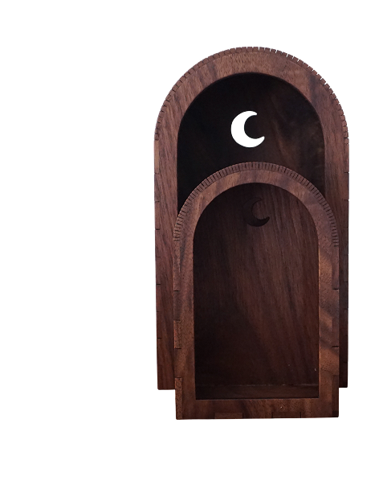
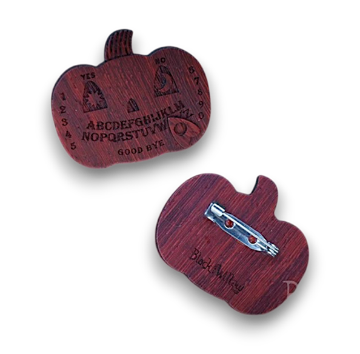
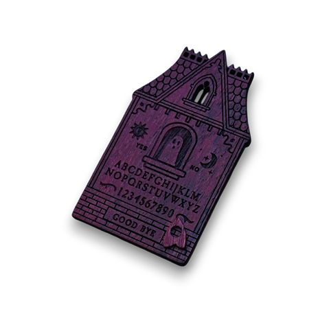
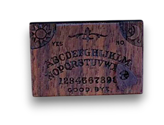
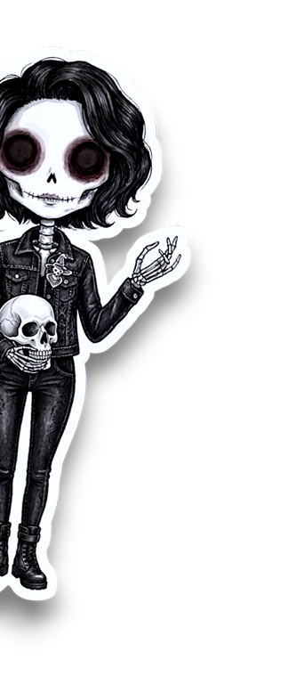

BEHIND BLACK WILLOW
Meet the hands, ideas, and little details that bring each piece to life
LUPE FLORES
Lupe Flores is a self-taught Chicana artist, painter, and doll maker from Compton, now based in Southern California.
Her work is defined by a gothic, melancholic, and dark art aesthetic that blends Mexican folk traditions with eerie and nostalgic themes.
Through her platform Black Willow Gallery, she creates acrylic paintings, haunted miniatures, and one-of-a-kind handmade art dolls known as Stitched Souls, regularly showcasing her pieces at dark art galleries and oddities markets.






SAIDE GARCÍA
Saide García is a multidisciplinary visual artist, artisan woodworker, and sculptor based in Compton, California.
She co-founded Black Willow Gallery, an independent creative studio established in 2010. While her primary specialty is handcrafted woodworking—building miniature Victorian houses, spirit boards, and tarot boxes from scratch—her work also spans paper-mâché sculpture, wire art, and the upcycling of vintage found objects.
Across every medium, she blends traditional craftsmanship with a gothic, nostalgic, and macabre aesthetic.







